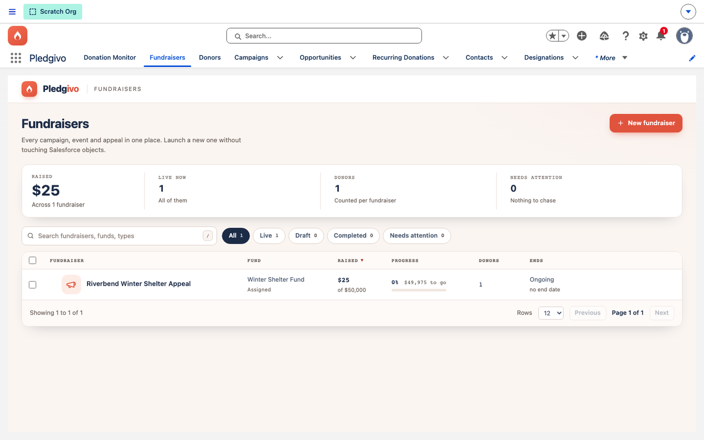
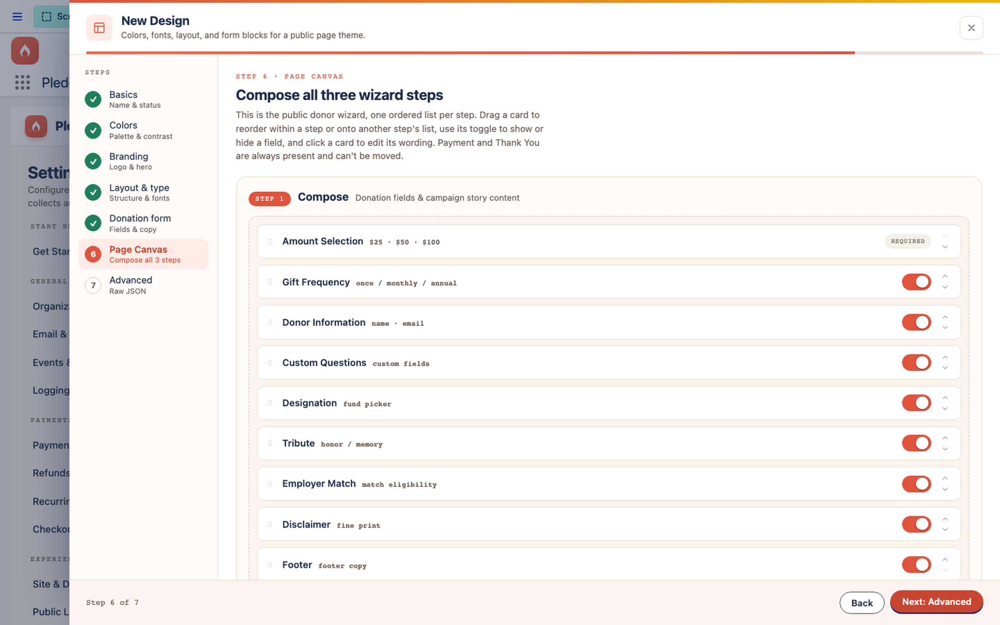

Core Concepts
Campaigns#
There's no separate "fundraising campaign" object. Every ask — a single donation page, a ticketed event — starts from the standard Salesforce Campaign.
Campaign is the anchor#

**What it shows.** The Fundraisers console — every Campaign the package touches (donation appeals, ticketed events) in one table with fund, progress toward goal, and status, backed entirely by standard Campaign records rather than a parallel object.
Using the standard Campaign object means campaign reporting, campaign member tracking, and campaign hierarchies all work the way they already do in your org — Pledgivo adds fields and related objects on top rather than introducing a parallel structure.
A Campaign gains, through the package:
| Related object | Purpose |
|---|---|
Payment_Account__c |
Which connected Stripe account this campaign's donations settle to (a lookup on the Campaign — one account per campaign) |
Campaign_Design__c |
The page design/theme applied to this campaign's public donation page |
Designation__c |
Optional fund designations a donor can choose (e.g. "Where needed most," "Youth programs") |
Custom_Question__c |
Optional extra questions shown on the donation form |
Campaign_FAQ__c |
FAQ content shown on the public campaign page |
When a campaign stops taking money#
Two separate switches decide this, and they do different jobs.
Status decides whether the page exists at all. A Campaign that isn't Active is invisible to
the public — its URL returns nothing, whatever its dates say. That is the switch to use when an
appeal should disappear.
End date is, by default, presentation only. It drives the countdown on the page and the "Ended" tag in the Fundraisers console, but an Active campaign goes on accepting gifts after it passes. That is deliberate and usually right: for most appeals the date is a milestone — a gala night, a match deadline, a season — and a donor who arrives a week late with a gift in hand should not be turned away.
When the date is a genuine deadline, turn off Keep accepting after the end date on the campaign. From the day after the end date, the public page then shows a short closing message in place of the form, and the server refuses any gift or ticket order for that campaign even if someone reaches the endpoint directly.
Nothing changes on existing campaigns
The toggle is on for every campaign, existing and new. Upgrading the package does not close anything — an ended campaign keeps behaving exactly as it did until someone deliberately turns the toggle off on that campaign.
Two things are unaffected either way. Recurring gifts already in place keep renewing — an ended campaign does not cancel a donor's monthly schedule, which is governed by the campaign's recurring behaviour and migration settings instead. And a ticketed event stops selling seats the day after the event regardless, since a seat at a night that already happened isn't sellable whatever the toggle says.
Offering to let donors cover the fee#
Let donors cover processing fees is a per-campaign toggle, off unless you turn it on. When it's on, the campaign's form offers the donor a checkbox to add your processor's cut on top of their gift; when it's off, no request can apply coverage to that campaign whatever it claims. Keeping the decision on the campaign means a delicate appeal can leave it alone while a year-end push turns it on. The rate itself is org-wide — see Donations & payments.
Page design and the Page Canvas#
A campaign's public donation page is composed, not hard-coded. Campaign_Design__c holds a
Form_Builder_JSON__c document describing a three-step wizard:
- Compose — a movable, interleavable sequence of field blocks (amount, frequency, donor info, custom questions, designation, tribute/dedication, employer match) and content blocks (rich text, image, video, testimonial, gallery).
- Payment — locked. Always the Stripe Payment Element step, positioned by the framework, not the admin.
- Thank You — the locked confirmation block plus optional share/call-to-action blocks.
Note that the donor's actual confirmation is now a separate page at
/thank-you, and this step's custom copy does not yet reach it — see Donations & payments.
Admins build this in Settings → Experience Cloud → Designs, using the Page Canvas composer — drag blocks into Step 1, leave Step 2 alone, customize Step 3.
FAQs are deliberately not a block. Any FAQ selected on the campaign renders automatically in an answer shelf below the donation form's action bar on the Compose and Payment steps, with a ? Questions link in the bar that jumps to it. That placement is fixed on every design, so an FAQ can never be dropped between the last field and the Donate button, and a campaign that has selected FAQs can never end up not showing them. A campaign with no FAQs shows no shelf at all.

**What it shows.** The Page Canvas editor showing a sequence of field and content blocks in the Compose step, with a drag handle on each.
Layout modes#
The blocks decide what is on the page; Form_Layout_Mode__c on the design decides how it is
arranged. Six modes ship with the package, and every one of them is a full-width, wide-contained
(~1440px) composition built for minimal scrolling:
| Mode | Arrangement | Suits |
|---|---|---|
Spotlight |
Centered single column under a wide hero banner | Straightforward appeals; the safe default |
Split_Hero |
Story rail beside the form, with raised/goal figures | Appeals that need to argue their case |
Summary_Sidebar |
Gradient hero over the form, live "Your gift" receipt rail | Larger or itemized gifts |
Conversational |
Numbered step indicator, one question at a time, receipt rail | First-time or hesitant donors |
Immersive |
Bled full-bleed scene with a cinematic story column | Photography-led, emotive campaigns |
Momentum |
Progress-ring panel with raised/goal/days-left figures | Deadline or goal-driven drives |
Each mode also carries its own type pairing, so a campaign changes character by changing one picklist rather than by hand-editing CSS.
The layout persists through checkout. Compose and Payment render on the same canvas — when a donor presses Continue to payment, only the form column swaps to the Stripe Payment Element. The story column, progress figures, gradient hero and receipt rail all stay on screen, so the page never drops to a bare payment card mid-transaction. On narrow screens each mode collapses to a single column and the side rails stack beneath the form.
Ticketed events use the same modes. Event_Layout__c on the design picks the arrangement for
a campaign's public ticket page, drawing on the same six layouts and the same theme tokens, so an
event page and a donation page from the same design look like they belong to one organization.
Theming#
Visual styling — colors, fonts, radius, spacing — is controlled by a token system rather than
free-form CSS. Every override a campaign design can make is one of a fixed, packaged catalog of
tokens (Theme_Token__mdt); anything not in that catalog is rejected server-side before a
guest page ever renders it. This keeps every campaign page visually consistent with the rest
of the package while still letting each campaign have its own accent color and imagery.
The last-chance prompt#
A donor who picks an amount and then leaves has told you something — they meant to give. The last-chance prompt is an optional dialog that appears when someone starts moving their cursor out of the page with a gift half-finished. It shows the amount they chose, offers to take them back to it, and offers to let them go.
It is off on every page design that ships with the app, and off on every new design you create. Switching it on is a deliberate choice, made per design, in Page designs → Donation form. Nothing about picking a theme for its colors will turn it on for you.
Four optional fields override the wording — headline, message, and the two button labels. Leave them blank and the packaged copy is used; the editor shows that copy as the placeholder, so you can see exactly what a donor will read before you decide to change it.
It only fires on desktop, and only once per visit. Detection works by watching the mouse pointer leave through the top of the browser window. A touchscreen gives no honest equivalent signal — the tricks people use there (hijacking the back button, guessing from scroll direction) fire on ordinary browsing and make a page feel like a trap, so the prompt simply does not run on those devices. It also stays quiet unless the donor has actually chosen an amount and is still on the first step; past that point they are completing a gift, not browsing away from one.
Reporting on who responded#
Salesforce already has a way to answer "who responded to this appeal?" — Campaign Members. It drives the standard campaign reports, the ROI dashboards, and the member-status funnel that most fundraising teams already know how to read.
By default this app does not touch that data. Turn on Add donors as Campaign Members in Settings → Organization & Donations and every finalized gift adds its donor to the campaign it came in on. Leave it off if your org already builds campaign membership with its own flows or an integration — two systems writing the same rows is worse than one.
A few things worth knowing before you switch it on:
- Event attendees have their own separate toggle, under Events. Turning on the donor one does not turn on the attendee one, and vice versa. They are deliberately independent because they run at different moments and add different people.
- Membership status is left to the campaign. New members get whatever your campaign's default status is, so your existing status funnel keeps working. The app never overwrites a status.
- Existing members are left alone. A repeat donor who is already on the campaign stays exactly as they are — same status, same dates. Nothing is duplicated and nothing is reset.
- Gifts from an organization are skipped. A Campaign Member has to be a Contact (or a Lead), so a gift booked directly to a company account with no contact on it produces no member. The gift itself is unaffected.
- It runs just after the gift is recorded, not during checkout, so nothing about it can slow down or fail a donation. If a membership can't be created, the donation still stands and the problem is logged for an admin.
Working from the campaign's record page#
The Fundraisers console tab is where a campaign gets built — the wizard, the page canvas, the tier editor. But most days nobody is building anything; they open a campaign record because someone asked a question about it. So the four things people come back to are on the record page too, and they are the same components the console uses, not lookalikes:
| Card | Shows on | What it's for |
|---|---|---|
| Check-in | Ticketed events only | The door board — search an attendee, mark them in or a no-show |
| Ticket tiers | Ticketed events only | The tier editor: prices, capacity, what each tier says for itself |
| Custom questions | Every campaign | Which questions the donation form asks on this campaign |
| FAQs | Every campaign | Which FAQs the donation page shows |
The two event cards are hidden on a campaign that isn't a ticketed event — a donation appeal has no door and no tiers, and an empty check-in board on it would just be noise. The other two apply to every campaign type, so they always render.
Edits made here and edits made in the console are the same edits. There is no separate record-page copy of a tier or a question to keep in sync.
What a Campaign can become#
-
A donation page
The default — a public page accepting one-time or recurring gifts.
-
A ticketed event
Add ticket tiers and seat capacity; the same donation pipeline handles checkout.
Building your first one#
See Set up your first campaign for a step-by-step walkthrough from a blank Campaign record to a published, donor-ready page.